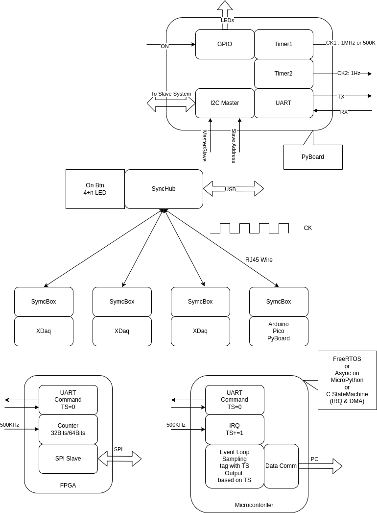
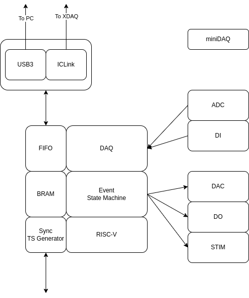
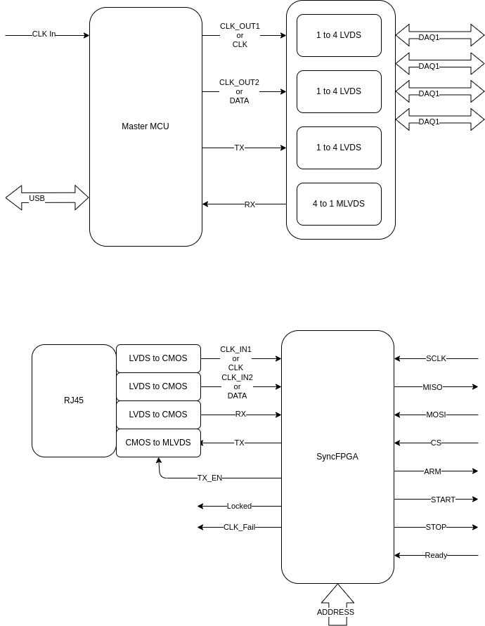
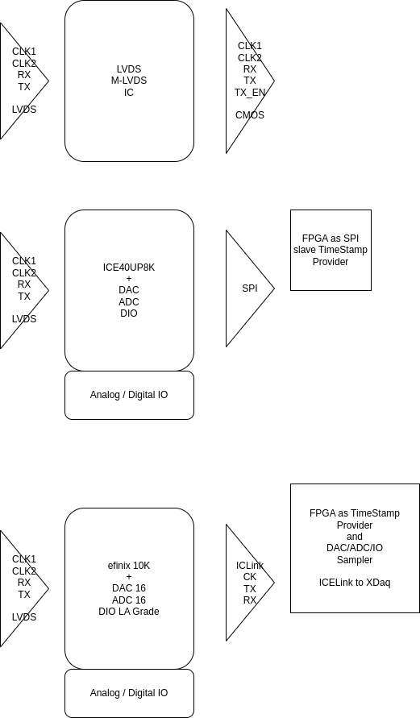
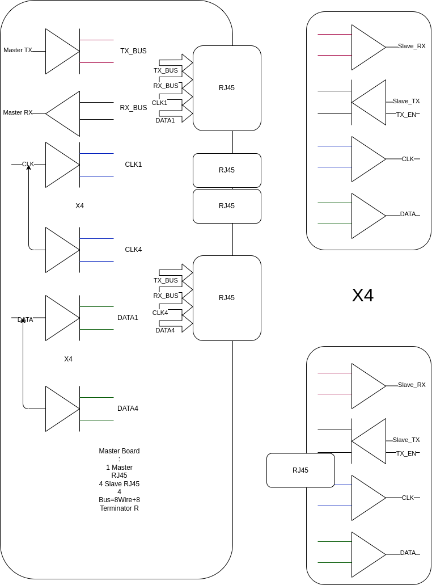
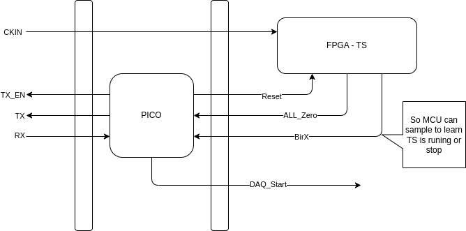

Sync Expander and Sync Hub Specification
Top Block

MiniDAQ use Sync Box can function as Event Controller

Block 1


Design Consideration
Reference
time-and-synchronization-v24.pdf
TDMS HDMI LVDS Speed 250MHz
DAQ Distance Consideration
If DAQ Distance between each other > 100M , Time Base Sync is better (PTP)
Otherwise, Signal Base Sync is OK.

Disconnect Possibility
If Signal between DAQ will lost, DPLL will be needed.
Otherwise, use the Signal as Clock is OK.
TimeStamp Bits Number
- 1KHz Clock : 32Bits = 2^32/1000/86400 = 49.7 Days 1000us
- 10KHz Clock : 32Bits = 2^32/10000/86400 = 4.97 Days 100us
- 50KHz Clock : 32Bits = 2^32/50000/86400 = 0.99 Days 20us
- 100KHz Clock : 32Bits = 2^32/100K/86400 = 0.49 Days 10us


Sync Hub Specification
MCU Or FPGA
USB Power and Data
CK_IN for External Clock Source.
(if none use Internal clock source)
Signal Based Sync:
CLK_OUT1 : User Define Clock Source 1
CLK_OUT2 : User Define Clock Source 2
Time Based Sync:
CLK : Data Clock
Data : Time Data
TX : Send Data to Sync Expander
RX : Receive Data from Sync Expander
LVDS Bus
1.Output LVDS , 1 to 4 (DS91M124)
2.Inout LVDS , 4 to 1 (SN65MLVD203B for TX/RX)
Sync Expander
Signal Based Sync:
CLK_IN1: Time Base Clock 1
CLK_IN2: Time Base Clock 2
Time Based Sync:
CLK : Data Clock
Data : Time Data
RX : Date from Hub
TX : Data to Hub
TX_EN : Enable Send Data
Address : Sync Expnader's ID
Locked: Lock to CLK_IN1 or CLK_IN2 (For DPLL)
CLK_Fail: No CLK Input
ARM : Output to DAQ
Start : Output to DAQ
Stop : Output to DAQ
Ready : DAQ to Sync Expander
Bus Test Board

Test Board
Master
- MCU Send SPI CLOCK/DATA
- MCU Send TX
- MCU Receive RX from Loop Back on Slave Board
Slave
- MCU Received SPI Clock/Data
- MCU RX Date from Master
- MCU TX Send Data fro
LFSR use Python
#https://en.wikipedia.org/wiki/Linear-feedback_shift_register
class LFSR():
def __init__(self, c=None, a=None, lenc=0):
if a is None:
a = []
if c is None:
c = []
self.a = a
self.c = c
self.lenc = lenc
lena = len(a)
def LeftShift(self):
#print(self.a)
lastb = 0
lenc = self.lenc
for i in range(lenc):
lastb = lastb ^(self.a[i] & self.c[i])
b = self.a[1:]
b.append(lastb)
outp = self.a[0]
self.a = b
return outp
c = [1,1,0,0,0,0] #x^6+x^5+1
a = [1,1,0,0,0,0] #0x30
lfsr1 = LFSR([1,1,0,0,0,0],a,6)
for i in range(65536):
lfsr1.LeftShift()
SyncBox_Slave Block Diagram

SyncBox Command
- Reset, n
- SendCK, X
- ReadST, id
- SyncStart
Sync-Slave Box
- CKIn to FPGA
- TX
- TX_En
-
RX
-
Reset to FPGA
- Start to FPGA
- Zero from FPGA
- AtNumber from FPGA